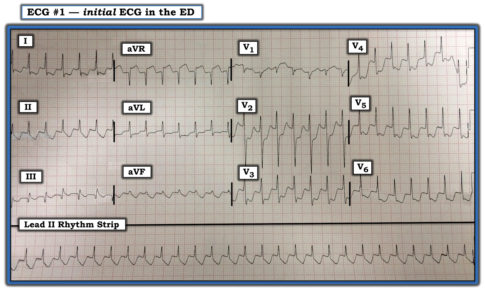
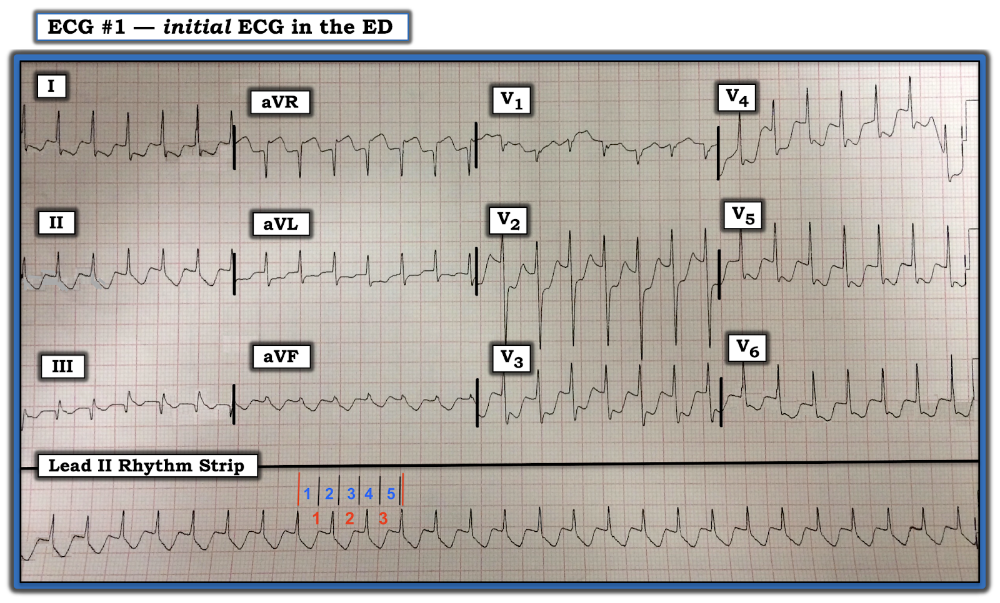

ECG Blog #250 (64) — ST chênh xuống và một SVT đều
Điện tâm đồ ở Hình-1 được ghi từ một người đàn ông 60 tuổi, trước đây khỏe mạnh, đến ED (khoa Cấp cứu – Emergency Department) vì hồi hộp đánh trống ngực và đau ngực mới xuất hiện.
CÂU HỎI:
- Bạn có nên kích hoạt phòng thông tim (cath lab) không?
- Bạn sẽ làm gì trước tiên?


Cách tiếp cận của tôi với ca bệnh hôm nay: Chúng ta được biết bệnh nhân trong ca hôm nay là một người đàn ông 60 tuổi đến ED vì hồi hộp đánh trống ngực và đau ngực mới xuất hiện. Và ở Hình-1 có một mức ST chênh xuống "đập ngay vào mắt" ở nhiều chuyển đạo. Ngoài ra còn có nhịp nhanh ...
- MẤU CHỐT: Việc thứ 1 cần làm khi đánh giá bất kỳ bệnh nhân nào đang có nhịp nhanh — là xác định XEM bệnh nhân có ổn định huyết động hay không. Đến lúc này chúng ta chưa được cho biết gì về tình trạng huyết động của bệnh nhân này.
- Dù mức ST chênh xuống ở điện tâm đồ #1 ấn tượng đến đâu — việc đọc bản ghi này vẫn nên theo đúng Cách tiếp cận hệ thống dùng để đánh giá bất kỳ điện tâm đồ nào (như đã bàn chi tiết trong ECG Blog #185 và Blog #205).
Ca bệnh tiếp diễn: Mặc dù bệnh nhân này đang có triệu chứng (tức là đau ngực, hồi hộp đánh trống ngực) — người ta nhận định anh ấy "đủ ổn định" để đánh giá ban đầu. Lúc này không thấy cần sốc điện chuyển nhịp ngay. Đánh giá theo cách tiếp cận Ps, Qs & 3R, ta thấy:
- Không thấy sóng P ở bất kỳ chuyển đạo nào.
- QRS hẹp (tức là rõ ràng không rộng quá nửa ô lớn) — nghĩa là nhịp ở Hình-1 là nhịp trên thất.
- Nhịp nhanh và Regular (đều). Tôi ước tính Rate (tần số) của nhịp là ~175-180/phút (Xem Hình-2). Vì không có dấu hiệu hoạt động nhĩ — nên không có "Relation" (liên hệ) giữa sóng P và các phức bộ QRS kế cận.


Suy nghĩ của tôi cho đến lúc này: Theo cách tiếp cận Ps, Qs & 3R — chúng ta đã xác định nhịp là một SVT đều ( = nhịp nhanh trên thất – SupraVentricular Tachycardia) tần số ~175/phút, không có dấu hiệu hoạt động nhĩ.
- Bạn có nên kích hoạt phòng thông tim không?
- Nhịp ở Hình-2 nhiều khả năng nhất là gì?
— Ca bệnh tiếp tục ở BÊN DƯỚI, sau Audio Pearl hôm nay ...
=======================================
LƯU Ý: Đến đây, một số bạn đọc có thể muốn nghe ECG Audio PEARL dài 10:50 phút trước khi đọc Suy nghĩ của tôi về điện tâm đồ ở Hình-1. Bạn có thể xem Suy nghĩ của tôi về bản ghi này bất cứ lúc nào (nằm ở bên dưới ECG MP-64).
=======================================


ECG Media PEARL #64 (10:50 phút Audio) hôm nay — Ôn lại DANH SÁCH #2: Các nguyên nhân thường gặp của nhịp SVT đều.
===============================
LƯU Ý: Trong Audio Pearl hôm nay, tôi có nhắc tới một số khái niệm quan trọng khi đọc rối loạn nhịp. Để tiện tra cứu — tôi liệt kê bên dưới các ĐƯỜNG LINK có thêm thông tin về những khái niệm này.
- ECG Blog #185 — ôn lại cách tiếp cận Ps, Qs & 3R (Hãy nghe Audio Pearl #3 trong bài này).
- ECG Blog #210 — ôn lại phương pháp Cách-Một-Nhát (Every-Other-Beat) để ước tính nhanh tần số tim (Xem Video Pearl #27 trong bài này).
- ECG Blog #220 — ôn lại DANH SÁCH #1: Các nguyên nhân gây WCT đều và — CÁCH đánh giá tình trạng huyết động có ổn định hay không (Hãy nghe Audio Pearl #37 trong bài này).
- ECG Blog #229 — ôn lại cách phân biệt cuồng nhĩ (AFlutter) với ATach (và TẠI SAO cuồng nhĩ lại hay bị bỏ sót đến vậy — Hãy nghe Audio Pearl #45).
- Bài đăng ngày 12 tháng 11 năm 2019 trên Dr. Smith's ECG Blog — trong đó tôi ôn lại cách tiếp cận của mình với một nhịp SVT đều.
===============================
Ca bệnh tiếp diễn:
Mặc dù có ST chênh xuống lan tỏa, rõ rệt ở điện tâm đồ #1 — ưu tiên hàng đầu lúc này là xác định nhịp, bởi vì:
- Nhịp này không có vẻ là nhịp xoang (vì không thấy sóng P dương ở DII).
- Nếu lập lại được nhịp xoang và kiểm soát được tần số — có thể phần lớn (gần hết) ST chênh xuống sẽ biến mất. Có thể ST chênh xuống mà chúng ta thấy trên bản ghi hôm nay không phải là hậu quả của hội chứng vành cấp.
- Ngay cả khi bệnh nhân này thật sự có hội chứng vành cấp — cũng không nên kích hoạt phòng thông tim cho đến sau khi đã chẩn đoán được rối loạn nhịp và kiểm soát lại được tần số.
DANH SÁCH #2: Các nguyên nhân thường gặp của nhịp SVT đều:
Chúng ta đã mô tả nhịp trong ca hôm nay là một SVT đều (nhịp nhanh trên thất – SupraVentricular Tachycardia) tần số ~170-180/phút, không có dấu hiệu rõ ràng của hoạt động nhĩ. Như đã bàn trong Audio Pearl ở trên (ECG-MP-64) — DANH SÁCH mà tôi ưa dùng để chẩn đoán phân biệt gồm 4 Nguyên nhân:
- Nhịp nhanh xoang (Sinus Tach).
- Cuồng nhĩ (AFlutter).
- Một SVT vào lại (tức là AVNRT hoặc AVRT).
- Nhịp nhanh nhĩ (ATach).
ĐIỂM THEN CHỐT (PEARL) #1: Trong 4 nguyên nhân tôi đã liệt kê cho một nhịp SVT đều không có dấu hiệu hoạt động nhĩ — theo kinh nghiệm của tôi, nguyên nhân ít gặp nhất là nhịp nhanh nhĩ (ATach). ATach có thể gây ra nhịp SVT đều với dẫn truyền AV 1:1 hoặc 2:1. Tần số nhĩ có thể dao động từ bất kỳ mức nào trên 100/phút — đến 240 lần/phút (hoặc hiếm khi, thậm chí còn nhanh hơn).
- ATach kèm blốc từng là một biểu hiện thường gặp của ngộ độc digitalis. Do việc dùng digitalis đã giảm mạnh trong những năm gần đây (và phần lớn những bệnh nhân vẫn còn dùng thuốc này được cho liều thấp hơn) — ATach kèm blốc ngày nay gặp ít hơn nhiều so với trước đây.
- Khi gặp ATach — nó thường biểu hiện bằng nhịp theo nhóm (group beating) do dẫn truyền Wenckebach. Kết quả là — thường có tỷ lệ dẫn truyền thay đổi, với những khoảng ngưng ngắn từng đợt — và NẾU nhịp là ATach, thì thường sẽ thấy sóng P được dẫn truyền đứng trước nhát đầu tiên ở cuối các khoảng ngưng đó. Mặc dù để cho đầy đủ, tôi vẫn liệt kê ATach là một trong 4 nguyên nhân trong DANH SÁCH SVT của mình — ATach không hay biểu hiện dưới dạng một nhịp SVT đều tuyệt đối mà không có sóng P nào.
ĐIỂM THEN CHỐT (PEARL) #2: Xác định tần số tim có thể cung cấp một manh mối quan trọng về căn nguyên của một SVT đều không có dấu hiệu rõ ràng của hoạt động nhĩ.
- Ở người lớn đang nằm ngửa (tức là người lớn không vừa mới gắng sức) — nhịp nhanh xoang vượt quá ~170/phút là điều không thường gặp. Điều này không có nghĩa là bạn sẽ không bao giờ gặp nhịp nhanh xoang nhanh đến thế ở người lớn không gắng sức — mà là muốn nói rằng tần số tim rất nhanh trong ca hôm nay (tức là ~175/phút) khiến nhịp nhanh xoang ít có khả năng hơn.
- Cuồng nhĩ chưa điều trị thường biểu hiện nhất với dẫn truyền AV 2:1, trong đó tần số nhĩ của cuồng nhĩ gần 300/phút (tức là trong khoảng ~250 đến 350/phút) — và tần số thất gần bằng một nửa, tức là ~150/phút (tức là trong khoảng ~130 đến 160/phút). Tần số thất ~175/phút trong ca hôm nay sẽ ngụ ý tần số nhĩ là 175 X 2 = 350/phút, nhanh hơn tần số nhĩ thường gặp của cuồng nhĩ.
- Từ những điểm trên — có thể thấy rằng khi tần số của một nhịp SVT đều không vượt quá 150-160/phút — thì bất kỳ nguyên nhân nào trong DANH SÁCH SVT cũng đều có thể là thủ phạm. Tuy nhiên, khi tần số thất lớn hơn ~170/phút — thì một nhịp SVT vào lại trở nên nhiều khả năng hơn hẳn!
DIỄN TIẾN của ca bệnh hôm nay:
Bằng phương pháp loại trừ — nhịp trong ca hôm nay được chẩn đoán là một SVT vào lại — và được điều trị bằng adenosine. Thuốc nhanh chóng chuyển nhịp về nhịp xoang — kèm theo hết triệu chứng của bệnh nhân và phần lớn ST chênh xuống cũng biến mất.
- Thông tim chẩn đoán đã được thực hiện do tuổi của bệnh nhân và triệu chứng khởi phát là đau ngực, đi kèm ST chênh xuống lan tỏa và rõ rệt đến vậy. Kết quả thông tim cho thấy không có gì hơn bệnh mạch vành tối thiểu.
ĐIỂM THEN CHỐT (PEARL) #3 cuối cùng: Một hình ảnh điện tâm đồ quan trọng cần nhận ra — là ST chênh xuống lan tỏa (ở ≥7 chuyển đạo) đi kèm ST chênh lên ở chuyển đạo aVR. Cần nhấn mạnh rằng hình ảnh điện tâm đồ này không phải là dấu hiệu của tắc mạch vành cấp. Thay vào đó, nó gợi ý Thiếu máu cục bộ dưới nội tâm mạc lan tỏa, có thể do một trong các nguyên nhân sau:
- Bệnh Mạch vành Nặng (do tổn thương thân chung động mạch vành trái (LMain), đoạn gần LAD, hoặc bệnh 2 hay 3 nhánh mạch vành nặng) — trong bối cảnh lâm sàng phù hợp có thể chỉ điểm ACS (hội chứng vành cấp – Acute Coronary Syndrome).
- Thiếu máu cục bộ dưới nội tâm mạc do một Nguyên nhân khác (tức là loạn nhịp nhanh kéo dài; sốc/tụt huyết áp nặng; xuất huyết tiêu hóa; thiếu máu; v.v.).
Những điểm học tập CHÍNH từ ca bệnh hôm nay:
Thật may là mặc dù có ST chênh xuống rất sâu trên điện tâm đồ ban đầu — phòng thông tim đã không bị kích hoạt. Thay vào đó, xử trí ban đầu đã tập trung một cách hợp lý vào chẩn đoán và điều trị nhịp tim.
- Kết quả thông tim chỉ có bệnh mạch vành tối thiểu cho thấy rằng ngay cả thiếu máu cục bộ dưới nội tâm mạc nặng và lan tỏa đôi khi cũng có thể không phải là hậu quả của bệnh mạch vành nặng.
- Cuối cùng — nhịp nhanh kéo dài có thể là nguyên nhân gây ST chênh xuống rõ rệt.
==================================
PHẦN BỔ SUNG (ngày 8 tháng 9 năm 2021): 2 DANH SÁCH mà tôi ưa dùng để chẩn đoán rối loạn nhịp tim giúp đánh giá các nhịp nhanh đều QRS rộng và QRS hẹp. Phần bàn luận trong bài hôm nay tập trung vào DANH SÁCH #2 = các nguyên nhân gây SVT đều.
- Tôi đã thêm Hình-3 dưới đây, để ôn lại các nguyên nhân trong DANH SÁCH #1 của tôi.

==================================
Các bài ECG Blog liên quan đến ca bệnh hôm nay:
- ECG Blog #185 — Ôn lại cách tiếp cận Ps, Qs & 3R để đọc nhịp có hệ thống.
- ECG Blog #205 — Ôn lại cách tiếp cận hệ thống của tôi khi đọc điện tâm đồ 12 chuyển đạo.
- ECG Blog #210 — Bàn về một ca nhịp nhanh đều QRS rộng – WCT (Media Pearl #27 trong bài này là một Video ôn lại phương pháp Cách-Một-Nhát (Every-Other-Beat) để ước tính tần số tim khi nhịp nhanh).
- ECG Blog #220 — Ôn lại chẩn đoán phân biệt theo Danh sách #1: Các nguyên nhân gây nhịp WCT đều không có dấu hiệu rõ ràng của hoạt động nhĩ (Media Pearl #37 trong bài này là một Audio ôn lại cách đánh giá XEM bệnh nhân có ổn định về huyết động hay không).
- ECG Blog #229 — ôn lại cách phân biệt cuồng nhĩ (AFlutter) với ATach (và TẠI SAO cuồng nhĩ lại hay bị bỏ sót đến vậy — Hãy nghe Audio Pearl #45).
- Bài đăng ngày 12 tháng 11 năm 2019 trên Dr. Smith's ECG Blog — Bàn về một ca khác có nhịp SVT đều.
- Bài đăng ngày 16 tháng 10 năm 2019 trên Dr. Smith's ECG Blog — Bình luận của tôi (ở cuối trang) ôn lại cách tiếp cận của tôi với một ca khác có nhịp SVT đều.
- ECG Blog #196 — Trình bày "quan điểm của tôi" về việc đánh giá WCT (nhịp nhanh QRS rộng – Wide-Complex Tachycardia) đều — kèm các mẹo phân biệt giữa VT với SVT có BBB sẵn có hoặc dẫn truyền lệch hướng.